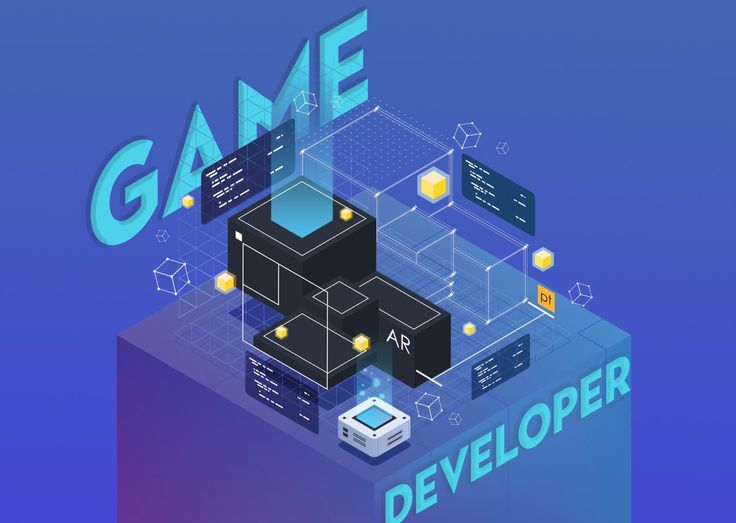
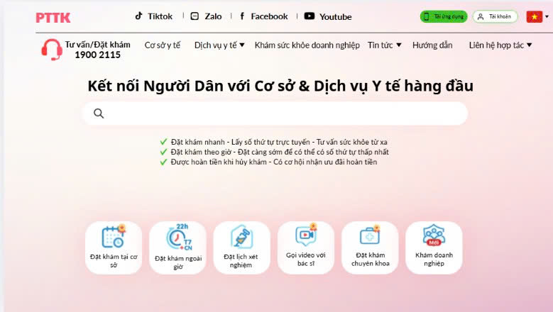

Phát triển Game 2D Xianxia (Tu Tiên)
Dự án cá nhân kết hợp giữa lập trình di động và chủ đề tu tiên, xây dựng bản đồ thời gian thực và cơ chế độc đáo.
DartFlutter
Sinh viên ngành Công nghệ Phần mềm tại ĐH Giao thông Vận tải TP.HCM (UTH). Đam mê lập trình web/mobile và phát triển ứng dụng tối ưu mang lại giá trị thiết thực.
Tôi là sinh viên năm 3 ngành Công nghệ Phần mềm tại Trường Đại học Giao thông Vận tải TP.HCM (UTH). Có niềm đam mê lớn với lập trình, phát triển ứng dụng web/mobile và khám phá các giải pháp công nghệ hiện đại.
Trở thành một Software Engineer chuyên nghiệp, có năng lực thiết kế hệ thống và phát triển các ứng dụng tối ưu, áp dụng các công nghệ như Python, FastAPI, Flutter, PostgreSQL để giải quyết các bài toán thực tiễn.
Theo học chuyên ngành Công nghệ Phần mềm, hoàn thành các học phần lập trình nâng cao, cơ sở dữ liệu và toán ứng dụng.
Thực hiện dự án nghiên cứu so sánh hiệu năng CPU và GPU cho các cuộc tấn công Brute-force/Dictionary trên MD5, SHA-1, SHA-256.
Xây dựng game di động cá nhân đề tài tu tiên với bản đồ thời gian thực và cơ chế đặc biệt, sáng tạo.

Software Engineering Student

Dự án cá nhân kết hợp giữa lập trình di động và chủ đề tu tiên, xây dựng bản đồ thời gian thực và cơ chế độc đáo.
So sánh hiệu năng CPU và GPU trong các cuộc tấn công mã hóa mật khẩu (MD5, SHA-1, SHA-256).

Hệ thống quản lý công việc tối ưu hóa quy trình làm việc nhóm sử dụng FastAPI và Tailwind CSS.
Nếu bạn có cơ hội hợp tác, câu hỏi hay chỉ muốn chào một tiếng, cứ nhắn cho mình.
kn766019@gmail.com